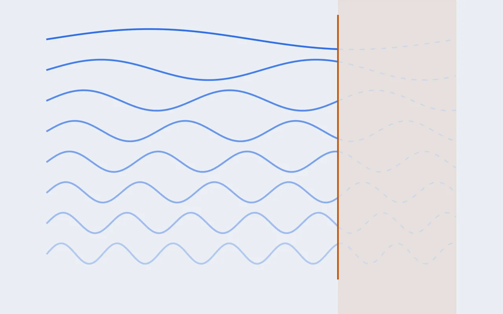
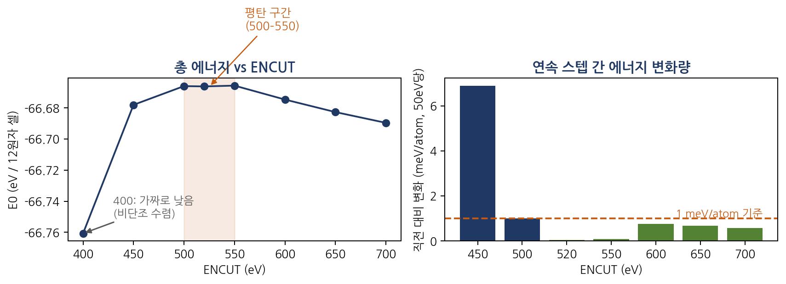

DFT 실습 [2] — ENCUT 수렴 테스트: 폴더 여덟 개로 그린 첫 수렴 곡선
DFT 계산의 정확도를 정하는 설정 중 하나가 ENCUT입니다. 파동함수를 평면파(사인파)의 합으로 나타낼 때 어디까지의 평면파를 쓸지 정하는 값입니다. 실습 [1]에서 첫 에너지는 얻었지만, 숫자가 나온 것과 그 숫자를 믿을 수 있는 건 다른 문제입니다. 이번에는 입력 파일 열한 줄을 하나씩 설명하고, 계산 로그 읽는 법을 정리한 다음, ENCUT을 여덟 가지 값으로 바꿔 계산한 수렴 곡선으로 ENCUT을 감이 아니라 데이터로 정했습니다.

INCAR 열한 줄의 뜻
실습 [1]에서 쓴 INCAR를 이제는 전부 설명할 수 있게 됐습니다. 열한 줄이지만 묶어 보면 여섯 그룹입니다.
| 그룹 | 태그 | 뜻 |
|---|---|---|
| 정확도 | ENCUT=520 / EDIFF=1E-5 | 평면파 해상도 상한 / SCF 종료 조건("두 반복의 에너지 차가 이보다 작으면 멈춰라") |
| 전자 채우기 | ISMEAR=0 / SIGMA=0.05 | 페르미 준위의 급격한 계단을 가우시안으로 살짝 뭉개 수치적으로 다루기 쉽게 |
| 자성 | ISPIN=2 / MAGMOM=3*0 3*4 6*0 | 스핀 켜기 + 초기 스핀 가설(Mn³⁺ 고스핀 4μB). 이 파일에서 유일하게 물리적 주장이 담긴 줄 |
| 루프 범위 | NSW=0 / IBRION=-1 | 원자는 고정, 전자 문제(SCF)만. 바깥 이완 루프 끄기 |
| 속도와 정확도 | LREAL=.FALSE. | 투영 연산을 역공간에서 정확하게(작은 셀에 적합). 비교 계산끼리 반드시 동일해야 하는 설정 |
| 분석 출력 | LORBIT=11 | 원자별·오비탈별 분해 저장. 이온별 자기모멘트와 pDOS의 재료 |
정리하다 보니 설정값마다 출처가 있다는 게 보였습니다. ENCUT=520은 POTCAR에 적힌 원소별 요구치(ENMAX) 중 최댓값인 산소의 400 eV에 관례 계수 1.3을 곱한 값이고, MAGMOM의 4는 이론 [2]에서 훈트 규칙으로 유도한 값입니다. "남들이 쓰길래"는 출처가 될 수 없습니다.
계산 로그 읽는 네 단계
계산이 도는 동안 로그에는 SCF 반복이 한 줄씩 쌓입니다(DAV로 시작하는 줄들). 어제 돌린 스물세 줄짜리 로그를 다시 읽어 보니 네 단계로 나뉘었습니다.
- 1단계 (1~4행): 급격한 하강. 초기 파동함수가 임의의 출발점이라 에너지가 +1362에서 −100까지 떨어집니다. 이 구간엔 밀도 불일치 지표(rms(c)) 열이 비어 있는데, 처음 몇 스텝은 밀도를 고정한 채 파동함수만 다듬기 때문입니다.
- 2단계 (5~7행): 큰 오르내림. 밀도 갱신이 시작되면서 에너지가 −127에서 −68로 58 eV 오르내립니다. 고장이 아니라 망간의 스핀 배치가 정해지는 과정입니다. 자성 산화물에서 흔히 보이는 모양이고, 여기서 잘못된 스핀 상태로 수렴해 버릴 수도 있습니다.
- 3단계 (8~15행): 안정. 에너지 변화(dE)의 지수가 반복마다 한 자릿수씩 줄어듭니다. 밀도 혼합 알고리즘이 앞선 반복들을 바탕으로 다음 추측을 점점 잘하게 되는 구간입니다.
- 4단계 (16~23행): 빠른 수렴과 종료. 23번째 줄에서 dE = 5.4×10⁻⁶ < EDIFF(1×10⁻⁵)가 되어 기준을 통과하고 끝납니다. 마지막 줄
F= ... E0= ... mag=가 최종 결과입니다. 비교하거나 보고할 때는 스미어링 효과를 뺀 E0 값을 쓰고, mag는 물리적으로 맞는지 검산하는 데 씁니다.
이걸 정리하다가 점검 목록을 만들었습니다. 앞으로 모든 계산을 이 순서로 봅니다. ① 한도 안에서 dE < EDIFF에 도달했는지 → ② mag가 물리적으로 말이 되는지 → ③ 후반 dE가 지수적으로 줄어드는 모양인지 → ④ F와 E0의 차이가 작은지(스미어링이 적절한지). 어제 계산은 네 항목을 전부 통과했습니다.
변인을 통제한 수렴 테스트 설계
이제 본격적으로 ENCUT을 정할 차례입니다. ENCUT=520이 정말 충분한지 확인하려면 값을 바꿔 가며 에너지가 어디서부터 더 변하지 않는지 봐야 합니다. 설계는 실험할 때와 똑같이 변인 통제로 했습니다.
- 기존 결과는 절대 덮어쓰지 않습니다. 폴더를 복사해서 ENCUT 값을 이름에 넣습니다(enc400, enc450, …).
- 복사본에서는 이전 계산의 산출물(WAVECAR, CHGCAR 등)을 지웁니다. 남아 있으면 VASP가 이전 답에서 이어서 시작해서 공정한 비교가 안 됩니다.
- 바꾸는 건 딱 한 줄(ENCUT)입니다. 두 변수가 같이 바뀐 데이터는 어느 쪽 효과인지 나눌 수 없어서 버려야 합니다.
여덟 폴더를 손으로 만드는 대신 반복문으로 만들었습니다.
for E in 450 500 550 600 650 700; do
cp -r test01 enc$E # 원본 보존, 복사본 생성
cd enc$E
rm -f WAVECAR CHGCAR CHG OUTCAR OSZICAR vasp.log CONTCAR
sed -i "s/ENCUT = 520/ENCUT = $E/" INCAR # 딱 한 줄만 수정
sed -i "s/NaMnO2_test/e$E/" jobscript
qsub jobscript # 제출 — 여섯 개가 병렬로 돈다
cd ..
done노드가 비어 있어서 여섯 잡이 동시에 돌았고, 전부 끝나는 데 십 분이 안 걸렸습니다. 결과도 한 줄로 뽑았습니다. 폴더마다 결과 파일에서 E0만 꺼내 표로 만듭니다.
enc400 -.66760736E+02
enc450 -.66678097E+02
enc500 -.66666055E+02
enc520 -.66666258E+02
enc550 -.66665737E+02
enc600 -.66674690E+02
enc650 -.66682744E+02
enc700 -.66689650E+02수렴 곡선과 예상 밖의 결과

곡선에서 보이는 건 세 가지였습니다.
- 400은 탈락입니다. 다른 점들과 원자당 ~6 meV나 떨어져 있습니다. 재미있는 건 방향인데, 에너지가 더 낮게 나왔습니다.
- 500~550은 평탄합니다. 세 점(500, 520, 550)의 차이가 원자당 0.05 meV 이하로 사실상 같습니다.
- 600부터는 다시 조금씩 내려갑니다. 스텝마다 원자당 ~0.6 meV씩 내려가고, 700에서도 완전히 멈추지 않았습니다.
첫 번째와 세 번째는 교과서에서 기대하는 모습("기저를 늘리면 에너지는 위에서부터 단조롭게 내려온다")과 다릅니다. 찾아보니 변분 원리의 단조 감소는 문제 자체는 그대로이고 기저만 커질 때 성립하는데, 실제 코드에서는 ENCUT을 바꾸면 밀도를 올려 두는 격자와 보정항들도 함께 바뀝니다. 그래서 수렴 곡선이 오르내리면서 다가가는 게 정상이고, 봐야 할 건 어느 쪽이 낮으냐가 아니라 어디서부터 더 안 변하느냐입니다.
그럼 600 이후에 남은 느린 변화는 어떻게 봐야 할까요. 절대 총 에너지는 원래 아주 높은 컷오프까지 천천히 변하는 게 정상입니다. 그런데 연구에서 쓰는 건 절대값이 아니라 같은 설정끼리의 에너지 차이이고, 그 느린 변화는 비교하는 양쪽에서 거의 똑같이 생겨서 차이를 내면 상쇄됩니다. 계획할 때 "절대 에너지가 아니라 에너지 차이의 수렴을 보라"고 적어만 뒀던 걸 오늘 데이터로 확인했습니다.
ENCUT = 520으로 고정
520으로 정한 근거는 세 가지입니다.
- 평탄 구간(500~550)의 가운데입니다.
- POTCAR 규칙(최대 ENMAX 400 × 1.3)과 맞고, 다들 많이 쓰는 표준값입니다.
- 앞으로 모든 계산에서 같은 값을 쓰면 절대 수렴의 남은 오차는 차이에서 상쇄됩니다. 650이나 700은 정확도는 거의 안 좋아지는데 비용만 (평면파 수 ∝ ENCUT^1.5로) 늘어납니다.
랩노트에도 적었습니다. "ENCUT 수렴테스트 완료(400–700, 8점). 결정: ENCUT=520 동결." 앞으로 이 프로젝트의 모든 계산에서 이 줄은 건드리지 않습니다. 바꾸는 순간 그 전까지의 데이터와 비교할 수 없게 되기 때문입니다.
이날 배운 것들
- 설정값을 데이터로 정하는 절차를 처음부터 끝까지 해 봤습니다. 추측하고, 여러 값으로 계산하고, 곡선을 그리고, 정하고, 고정합니다.
- 수렴은 단조롭지 않습니다. 잘못 낮게 나온 에너지(enc400)에 속지 않으려면 절대값이 아니라 변화량을 봐야 합니다.
- for + sed + qsub 세 줄이면 계산 여덟 개가 알아서 돕니다. 다음 단계(배열 수십 개 스캔)를 작게 미리 해 본 셈입니다.
- 로그는 네 단계로 나눠 읽습니다. 수렴, 모멘트, 감소 모양, F−E0로 된 점검 목록이 생겼습니다.
다음. 수렴 테스트의 나머지 절반인 k-mesh입니다. 같은 방법으로 KPOINTS 한 줄만 바꿔 가며(2×2×1부터 10×10×4까지) 브릴루앙 영역을 k점 몇 개로 나눌지 정하면, 정확도를 정하는 두 설정이 모두 데이터로 정해집니다. 그다음 구조 이완과 Na를 빼는 계산으로 넘어갑니다.

Seok
연구하면서 개발합니다. 배터리 재료를 원자 단위에서 계산하는 법을 바닥부터 배우는 중입니다. → 연구 · DFT 글 더 보기